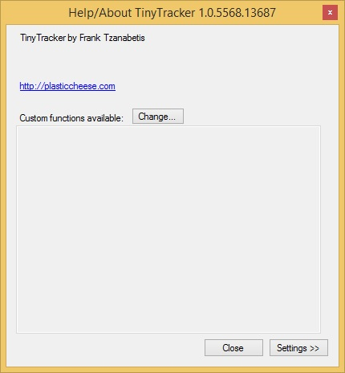
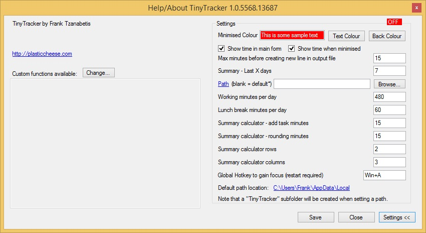

Settings
Press F1 from the main window to open Help/About and Settings.


Appearance
Minimised Colour
Changes the minimized window background color.
Text Colour
Changes the minimized window text color.
Time display
Show time in main form
Shows elapsed time beside each task in the main list.
Show time when minimised
Shows elapsed time on the minimized label.
Show tooltips
Turns the in-app help tooltips on or off.
Startup and focus
Start TinyTracker when Windows starts
Adds TinyTracker to your Windows startup list.
Global Hotkey to gain focus
Lets you bring TinyTracker to the front from anywhere in Windows.
Examples:
Win+ACtrl+F8Alt+Shift+Q
After changing this setting, restart TinyTracker.
File and path settings
Path
Sets the parent folder for TinyTracker data.
TinyTracker always creates and uses a TinyTracker subfolder inside that location.
Default path location
Shows the Windows local app-data location TinyTracker uses when Path is blank.
Max minutes before creating new line in output file
Sets how long TinyTracker keeps extending the current CSV row before it starts a new row for the same task.
15is the default.-1removes the limit.
Summary settings
Summary - Last X days
Sets the default value used by the Last box in Summary.
Working minutes per day
Used by Summary and Summary Calculator when they show remaining time.
Lunch break minutes per day
Used by Summary when it calculates daily time left or time over.
Summary Calculator settings
Summary calculator - add task minutes
Controls how much time the + button adds in each group calculator.
Summary calculator - rounding minutes
Controls the Round and Round All buttons.
- Positive numbers round up.
- Negative numbers round down.
Summary calculator rows
Sets the starting number of calculator rows.
Summary calculator columns
Sets the starting number of calculator columns.
Summary calculator copy mode
Controls whether copied totals use:
- decimal hours
HH:MM
Updates and custom functions
Check for updates
Checks whether a newer version of TinyTracker is available.
Custom functions available
Shows any optional F2 to F12 actions that have been configured for your installation.